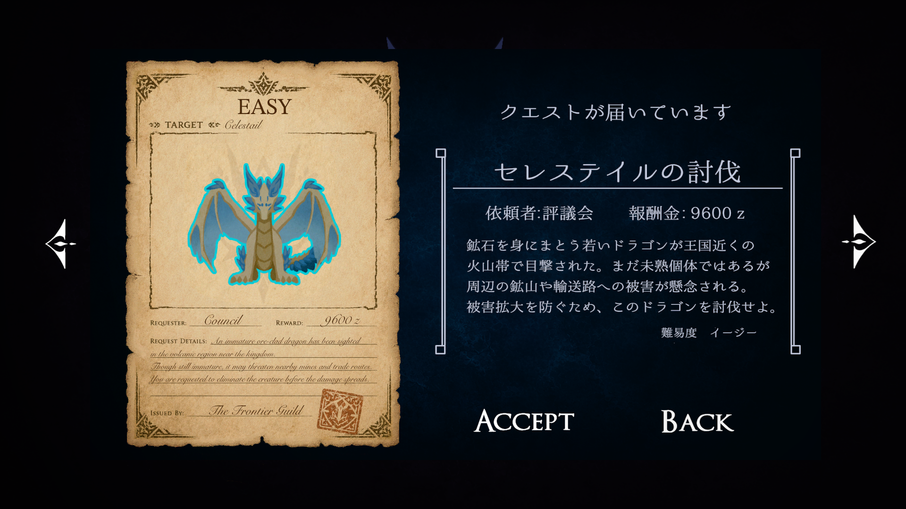
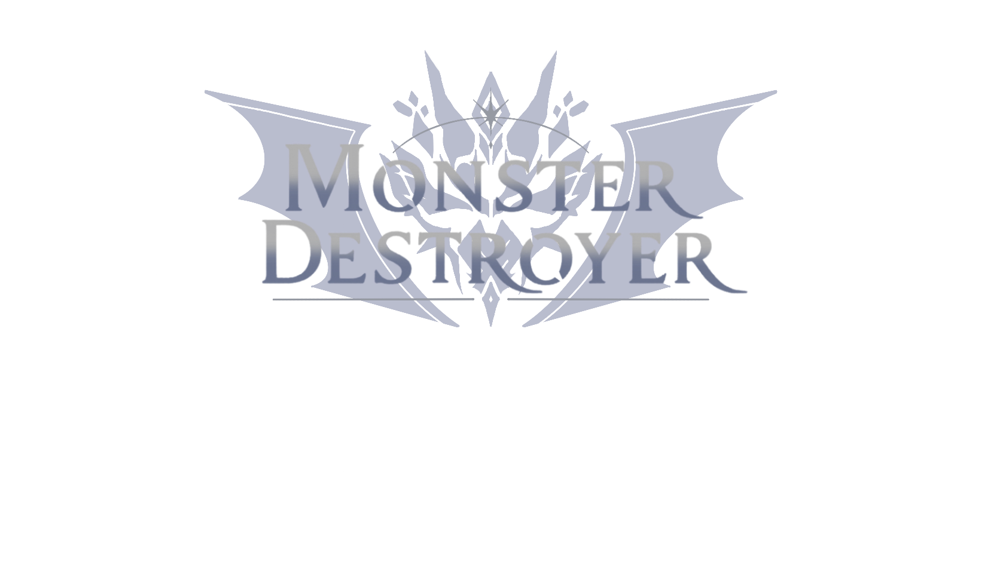
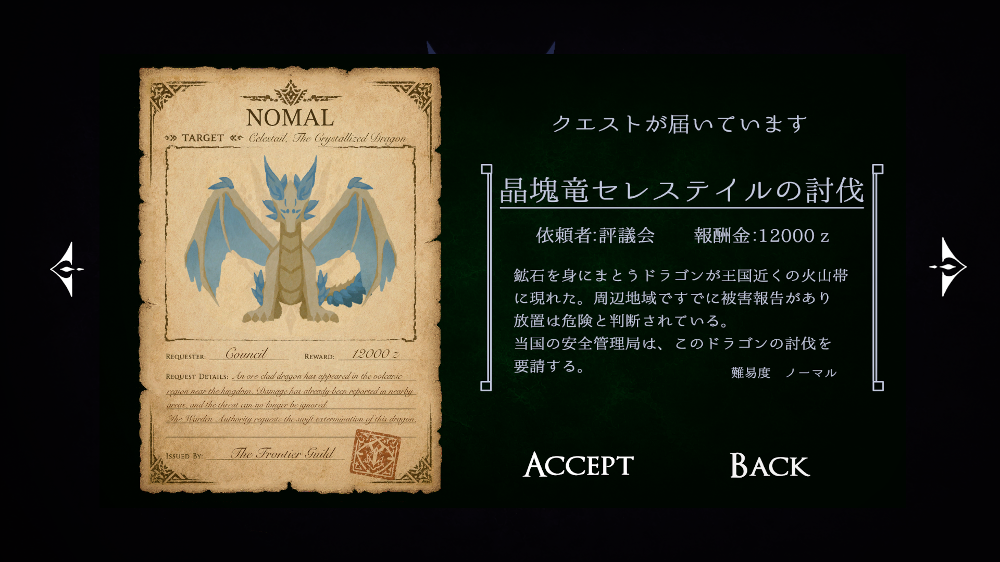
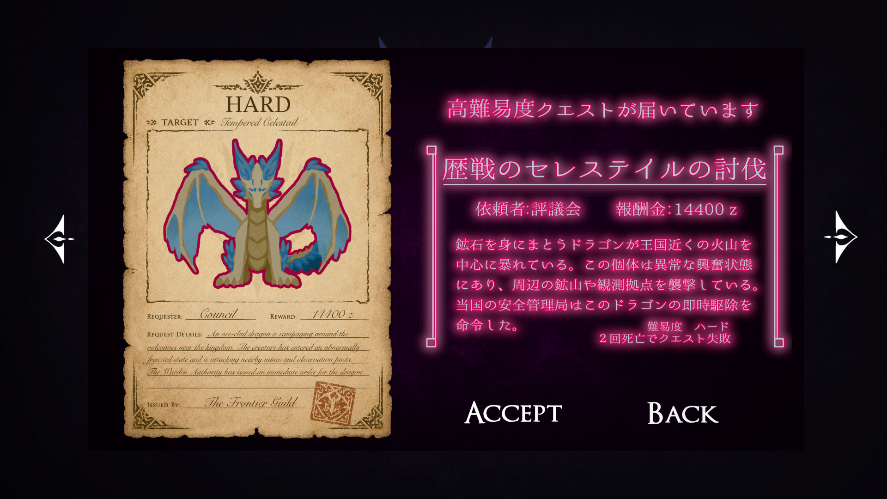
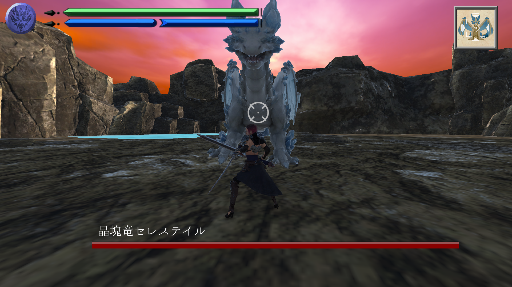
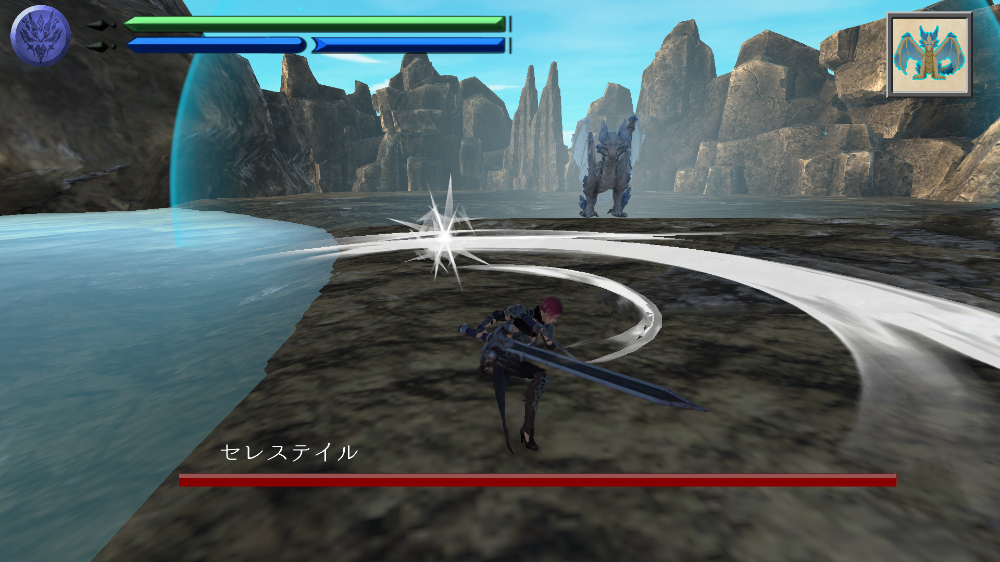
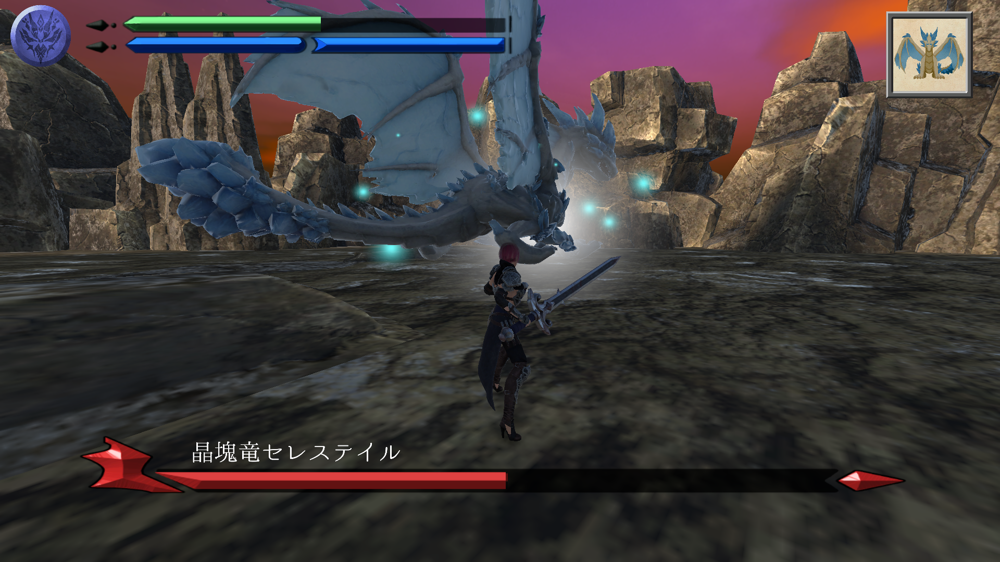
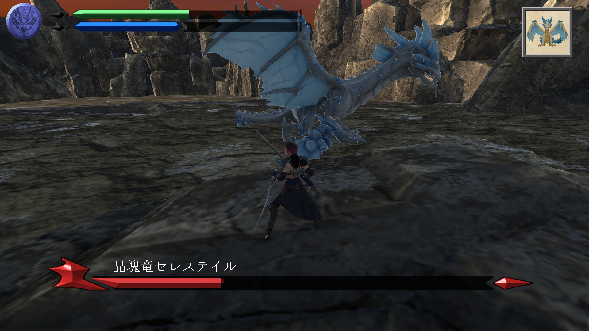
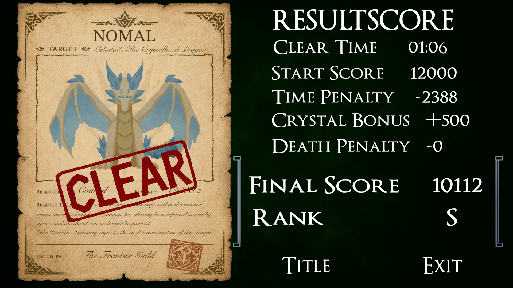

Easy
初心者向けの導入
初心者が遊びやすい入り口として設計。 ボスのサイズやテンポも含めて、まず行動を把握しやすい体験を目指しました。
Unity 3D Boss Battle Action

巨大な結晶竜に挑む、短編3Dボスバトルアクション。
ブリンク、ロックオン、尻尾切断、スコアリザルトを軸に、
短時間でも濃いボス戦体験を目指しました。
Scroll
Game Overview
『Monster Destroyer』は、プレイヤーが巨大な結晶ドラゴンに挑む 短編3Dボスバトルアクションです。 プレイヤーはブリンク、コンボ、ロックオン、尻尾切断などを活用しながら、 短時間でも濃いボス戦体験が得られることを目指しました。
本作では、「結晶をまとったドラゴン」というコンセプトを核に、 一定ダメージで尻尾を切断できるギミックを実装しました。 見た目の変化だけでなく、ボス戦の達成感を高める目玉要素として設計しています。
また、クリア時にはスコアとランクを表示し、 プレイヤーが自分のプレイを振り返り、より高いスコアを目指して再挑戦したくなるようにしました。 短編作品でもリプレイ率を上げることを意識しています。
Difficulty Design
Easy / Normal / Hard の3段階を実装しました。
同じモンスターを使いながらも、テンポ・サイズ・天候演出を変えることで、
難易度ごとに異なる印象を持たせています。

初心者が遊びやすい入り口として設計。 ボスのサイズやテンポも含めて、まず行動を把握しやすい体験を目指しました。

本作の基準難易度です。 プレイ体験・スコア設計・UI・敵行動などの全体バランスは、 この難易度を中心に調整しました。

行動間隔やアニメーション速度を上げ、 雨パーティクルや天候変化も加えて、強敵感と緊張感を演出しました。
Battle Records
古文書風の見た目や配色にこだわり、 タイトル画面からクエスト受注まで世界観の統一感を意識しました。

HPと、ブリンクの残量を把握しやすいようにUIを調整。 戦闘中でも一目で状況判断できる分かりやすさを意識しました。

爽快感と視覚的な分かりやすさを両立することを目指して調整。 攻撃の手応えが伝わるように演出しました。

敵の突進前にVFXを入れることで、見切りやブリンクをしやすくし、 理不尽な被弾感を減らすことを狙いました。
UX改善のためにロックオン視点を実装。 ボスとの距離感や向きが分かりやすくなり、戦闘中の視点管理を改善しました。

一定ダメージで尻尾を切断できる要素を実装。 見た目の変化だけでなく、ボス戦の目玉要素として作り込みました。

クリア後にスコア、時間、ランクを確認できるようにし、 プレイ結果を振り返りやすくしました。
Movie Record
ボス戦の流れ、難易度差、尻尾切断、UIが分かる動画を掲載予定
Production Archive
2週間弱の制作期間でどのように企画・実装・調整を進めたか、 ドラゴン制作、AI使用範囲、テストプレイによる改善を別ページにまとめています。
制作プロセスを見る